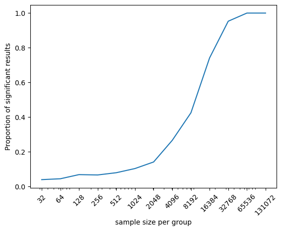

Chapter 9: Hypothesis testing
Contents
Chapter 9: Hypothesis testing#
import pandas as pd
import sidetable
import numpy as np
import matplotlib.pyplot as plt
import seaborn as sns
from scipy.stats import norm, t, binom, ttest_ind
import pingouin as pg
import matplotlib
import rpy2.robjects as ro
from rpy2.robjects.packages import importr
from rpy2.robjects import pandas2ri
pandas2ri.activate()
from rpy2.robjects.conversion import localconverter
# import NHANES package
base = importr('NHANES')
with localconverter(ro.default_converter + pandas2ri.converter):
NHANES = ro.conversion.rpy2py(ro.r['NHANES'])
NHANES = NHANES.drop_duplicates(subset='ID')
NHANES_adult = NHANES.dropna(subset=['PhysActive', 'BMI', 'BPSysAve']).query('Age > 17 and BPSysAve > 0')
rng = np.random.default_rng(123456)
Table 9.1#
sampSize = 250
NHANES_sample = NHANES_adult.dropna(subset=['BPSysAve']).sample(sampSize, random_state=rng)
healthGen_recoder = {'Poor': 1, 'Fair': 2, 'Good': 3, 'Vgood': 4, 'Excellent': 5}
sampleSummary = NHANES_sample.groupby('PhysActive')['BPSysAve'].describe()[['count', 'mean', 'std']]
print(sampleSummary)
sampleSummaryDiff = sampleSummary.diff().loc['Yes',:]
s1, s2 = sampleSummary['std'].values
n1, n2 = sampleSummary['count'].values
welch_df = (s1/n1 + s2/n2)**2 / ((s1/n1)**2/(n1-1) + (s2/n2)**2/(n2-1))
count mean std
PhysActive
No 124.0 122.290323 22.539495
Yes 126.0 118.285714 15.404341
Figure 9.1#
sns.boxplot(data=NHANES_sample, x='PhysActive', y='BPSysAve')
plt.xlabel('Physically active?')
plt.ylabel('Average systolic blood pressure')
Text(0, 0.5, 'Average systolic blood pressure')
Figure 9.2#
distDfNormal = pd.DataFrame({'x': np.arange(-4, 4, .01)})
distDfNormal['dnorm'] = norm.pdf(distDfNormal.x)
distDfNormal['dt4'] = t.pdf(distDfNormal.x, 4)
distDfNormal['dt1000'] = t.pdf(distDfNormal.x, 1000)
fig, ax = plt.subplots(1, 2, figsize=(12,6))
sns.lineplot(data=distDfNormal, x='x', y='dnorm', ax=ax[0], color='red')
sns.lineplot(data=distDfNormal, x='x', y='dt4', ax=ax[0], color='blue', linestyle='dashed')
ax[0].legend(['Normal', 't (df=4)'])
ax[0].set_title('df = 4')
ax[0].set_ylabel('density')
sns.lineplot(data=distDfNormal, x='x', y='dnorm', ax=ax[1], color='red')
sns.lineplot(data=distDfNormal, x='x', y='dt1000', ax=ax[1], color='blue', linestyle='dashed')
ax[1].legend(['Normal', 't (df=1000)'])
ax[1].set_title('df = 1000')
ax[1].set_ylabel('density')
Text(0, 0.5, 'density')
Figure 9.3#
def tossCoins(n=100):
return np.sum(rng.uniform(size=n) > 0.5)
# use a large number of replications since this is fast
coinFlips = np.array([tossCoins() for i in range(100000)])
sns.histplot(coinFlips, binwidth=1)
plt.plot([70, 70], [0, 7000], color='red')
[<matplotlib.lines.Line2D at 0x7f088e1cc880>]
Table 9.2#
def roundToNearest5(x, base = 5):
return(base * np.round(x / base))
squatDf = pd.DataFrame({'group': 5 * ['FB'] + 5 * ['XC'],
'squat': roundToNearest5(
np.hstack((rng.normal(size=5) * 30 + 300,
rng.normal(size=5) * 30 + 140))).astype('int')})
squatDf['shuffledSquat'] = rng.permuted(squatDf.squat.values)
squatDf
| group | squat | shuffledSquat | |
|---|---|---|---|
| 0 | FB | 315 | 160 |
| 1 | FB | 295 | 125 |
| 2 | FB | 275 | 140 |
| 3 | FB | 320 | 105 |
| 4 | FB | 290 | 175 |
| 5 | XC | 105 | 290 |
| 6 | XC | 140 | 320 |
| 7 | XC | 125 | 295 |
| 8 | XC | 160 | 275 |
| 9 | XC | 175 | 315 |
Figure 9.4#
fig, ax = plt.subplots(1, 2, figsize=(12,6))
sns.boxplot(data=squatDf, x='group', y='squat', ax=ax[0])
ax[0].set_ylabel('max squat (lbs)')
sns.boxplot(data=squatDf, x='group', y='shuffledSquat', ax=ax[1])
ax[1].set_ylabel('max squat (lbs)')
Text(0, 0.5, 'max squat (lbs)')
Two-group t-test:#
tt = pg.ttest(x=squatDf.query('group == "FB"').squat,
y=squatDf.query('group == "XC"').squat,
alternative='greater', correction=True)
tt
| T | dof | alternative | p-val | CI95% | cohen-d | BF10 | power | |
|---|---|---|---|---|---|---|---|---|
| T-test | 10.604266 | 6.977154 | greater | 0.000007 | [129.76, inf] | 6.706726 | 3708.105 | 1.0 |
Figure 9.5#
nRuns = 10000
def shuffleAndMeasure(df):
dfScram = df.copy()
dfScram['squat'] = rng.permuted(df.squat.values)
tt = pg.ttest(x=dfScram.query('group == "FB"').squat,
y=dfScram.query('group == "XC"').squat,
alternative='greater', correction=True)
return(tt['T'][0])
shuffleDist = np.array([shuffleAndMeasure(squatDf) for i in range(nRuns)])
---------------------------------------------------------------------------
KeyboardInterrupt Traceback (most recent call last)
Cell In[9], line 11
6 tt = pg.ttest(x=dfScram.query('group == "FB"').squat,
7 y=dfScram.query('group == "XC"').squat,
8 alternative='greater', correction=True)
9 return(tt['T'][0])
---> 11 shuffleDist = np.array([shuffleAndMeasure(squatDf) for i in range(nRuns)])
Cell In[9], line 11, in <listcomp>(.0)
6 tt = pg.ttest(x=dfScram.query('group == "FB"').squat,
7 y=dfScram.query('group == "XC"').squat,
8 alternative='greater', correction=True)
9 return(tt['T'][0])
---> 11 shuffleDist = np.array([shuffleAndMeasure(squatDf) for i in range(nRuns)])
Cell In[9], line 6, in shuffleAndMeasure(df)
4 dfScram = df.copy()
5 dfScram['squat'] = rng.permuted(df.squat.values)
----> 6 tt = pg.ttest(x=dfScram.query('group == "FB"').squat,
7 y=dfScram.query('group == "XC"').squat,
8 alternative='greater', correction=True)
9 return(tt['T'][0])
File /opt/conda/lib/python3.10/site-packages/pingouin/parametric.py:315, in ttest(x, y, paired, alternative, correction, r, confidence)
312 power = power_ttest2n(nx, ny, d=d, power=None, alpha=0.05, alternative=alternative)
314 # Bayes factor
--> 315 bf = bayesfactor_ttest(tval, nx, ny, paired=paired, alternative=alternative, r=r)
317 # Create output dictionnary
318 stats = {
319 "dof": dof,
320 "T": tval,
(...)
326 "BF10": bf,
327 }
File /opt/conda/lib/python3.10/site-packages/pingouin/bayesian.py:151, in bayesfactor_ttest(t, nx, ny, paired, alternative, r)
148 df = nx + ny - 2
150 # JZS Bayes factor calculation: eq. 1 in Rouder et al. (2009)
--> 151 integr = quad(fun, 0, np.inf, args=(t, n, r, df))[0]
152 bf10 = 1 / ((1 + t**2 / df) ** (-(df + 1) / 2) / integr)
154 # Tail
File /opt/conda/lib/python3.10/site-packages/scipy/integrate/_quadpack_py.py:463, in quad(func, a, b, args, full_output, epsabs, epsrel, limit, points, weight, wvar, wopts, maxp1, limlst, complex_func)
460 return retval
462 if weight is None:
--> 463 retval = _quad(func, a, b, args, full_output, epsabs, epsrel, limit,
464 points)
465 else:
466 if points is not None:
File /opt/conda/lib/python3.10/site-packages/scipy/integrate/_quadpack_py.py:577, in _quad(func, a, b, args, full_output, epsabs, epsrel, limit, points)
575 return _quadpack._qagse(func,a,b,args,full_output,epsabs,epsrel,limit)
576 else:
--> 577 return _quadpack._qagie(func,bound,infbounds,args,full_output,epsabs,epsrel,limit)
578 else:
579 if infbounds != 0:
File /opt/conda/lib/python3.10/site-packages/pingouin/bayesian.py:139, in bayesfactor_ttest.<locals>.fun(g, t, n, r, df)
133 def fun(g, t, n, r, df):
134 return (
135 (1 + n * g * r**2) ** (-0.5)
136 * (1 + t**2 / ((1 + n * g * r**2) * df)) ** (-(df + 1) / 2)
137 * (2 * pi) ** (-0.5)
138 * g ** (-3.0 / 2)
--> 139 * exp(-1 / (2 * g))
140 )
KeyboardInterrupt:
pvalRandomization = np.mean(shuffleDist >= tt['T'][0])
sns.histplot(shuffleDist, bins=50, stat='density')
distDfNormal['dt8'] = t.pdf(distDfNormal.x, 8)
sns.lineplot(data=distDfNormal, x='x', y='dt8', color='blue', linestyle='dashed')
plt.plot([tt['T'][0], tt['T'][0]], [0, .4], color='black')
[<matplotlib.lines.Line2D at 0x7efbb8d37820>]
Figure 9.6#
def shuffleBPstat(df):
dfScram = df.copy()
dfScram['BPSysAve'] = rng.permuted(df.BPSysAve.values)
tt = pg.ttest(x=dfScram.query('PhysActive == "No"').BPSysAve,
y=dfScram.query('PhysActive == "Yes"').BPSysAve,
correction=True)
return(tt['T'][0])
nRuns = 10000
meanDiffSim = np.array([shuffleBPstat(NHANES_sample) for i in range(nRuns)])
bp_tt = pg.ttest(x=NHANES_sample.query('PhysActive == "No"').BPSysAve,
y=NHANES_sample.query('PhysActive == "Yes"').BPSysAve,
correction=True)
bp_tt
| T | dof | alternative | p-val | CI95% | cohen-d | BF10 | power | |
|---|---|---|---|---|---|---|---|---|
| T-test | 2.291071 | 227.56194 | two-sided | 0.022874 | [0.77, 10.2] | 0.292623 | 1.638 | 0.634066 |
pvalRandomization = np.mean(meanDiffSim >= tt['T'][0])
sns.histplot(meanDiffSim, bins=50, stat='density')
plt.plot([bp_tt['T'][0], bp_tt['T'][0]], [0, .4], color='black')
plt.xlabel("T stat: BP difference between groups")
Text(0.5, 0, 'T stat: BP difference between groups')
Figure 9.7#
def exerciseTrial(nPerGroup, bpReduction=0.5):
bp_mean = NHANES_adult.BPSysAve.mean()
bp_sd = NHANES_adult.BPSysAve.std()
controlGroup = rng.normal(bp_mean, bp_sd, nPerGroup)
expGroup = rng.normal(bp_mean - bpReduction, bp_sd, nPerGroup)
bp_tt = pg.ttest(x=controlGroup,
y=expGroup,
correction=True)
return([nPerGroup, bpReduction, bp_tt['p-val'][0], controlGroup.mean() - expGroup.mean()])
nRuns = 1000
sampSizes = 2 ** np.arange(5,18) # powers of 2
simResults = []
for i, n in enumerate(sampSizes):
runResults = [exerciseTrial(n) for i in range(nRuns)]
runResultsDf = pd.DataFrame(runResults,
columns=['nPerGroup', 'bpReduction', 'pval', 'diff'])
simResults.append([n, np.mean(runResultsDf.pval < .05), runResultsDf['diff'].mean()])
simResultsDf = pd.DataFrame(simResults, columns=['n', 'psig', 'meandiff'])
p = sns.lineplot(data=simResultsDf, x='n', y='psig')
plt.xscale('log')
plt.ylabel('Proportion of significant results')
plt.xlabel('sample size per group')
_ = plt.xticks(simResultsDf.n, rotation=45)
p.get_xaxis().set_major_formatter(matplotlib.ticker.ScalarFormatter())

Figure 9.8#
nRuns = 1000 # number of simulated studies to run
nTests = 1000000 # number of simulated genes to test in each run
uncAlpha = 0.05 # alpha level
cutoff = norm.ppf(uncAlpha)
cor_cutoff = norm.ppf(uncAlpha/nTests)
uncOutcome = []
corOutcome = []
for i in range(nRuns):
sample = rng.normal(size=nTests)
uncOutcome.append(np.sum(sample < cutoff))
corOutcome.append(np.sum(sample < cor_cutoff))
fig, ax = plt.subplots(1, 2, figsize=(12,6))
sns.histplot(uncOutcome, bins=50, ax=ax[0])
sns.histplot(corOutcome, bins=50, ax=ax[1])
ax[0].set_xlabel(f'Number of significant results (out of {nTests})')
ax[1].set_xlabel(f'Number of significant results (out of {nTests})')
Text(0.5, 0, 'Number of significant results (out of 1000000)')